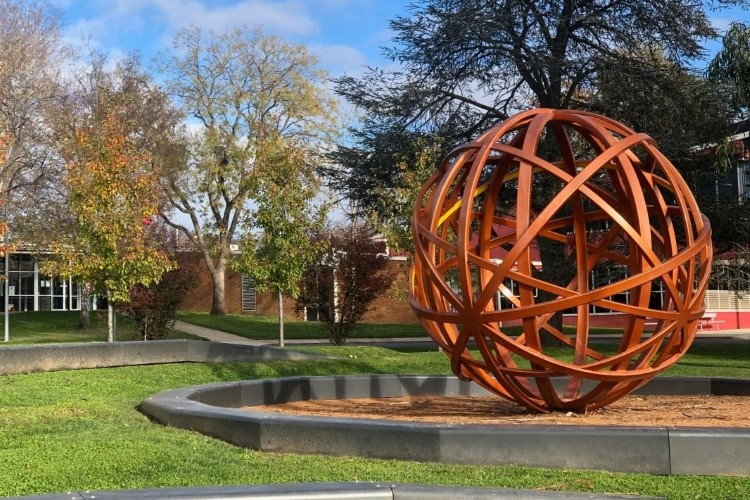
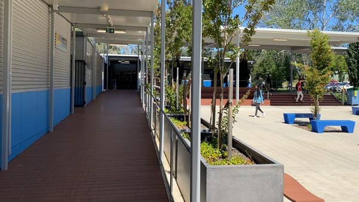

| Block A | Block B | Home | Block D | Block E | Block F | Block L | Block S | Switch CSS |
C BlockNarrabundah College's C block serves as the epicenter of scientific inquiry, where students immerse themselves in the captivating worlds of biology, chemistry, and physics. Within its modern laboratories, guided by dedicated educators, students explore the intricate mechanisms of life, the mysteries of matter, and the fundamental laws of the universe. In biology classes, students unravel the complexities of genetics, ecology, and human anatomy, gaining a deeper understanding of the interconnectedness of living systems. Adjacent, chemistry enthusiasts delve into the properties of atoms and molecules, conducting experiments that illuminate the principles of chemical reactions and their applications. Further along, physics classrooms ignite with exploration, as students delve into the forces that govern the cosmos, from quantum mechanics to the laws of motion. Through hands-on experiments and analytical inquiry, students cultivate critical thinking skills and a passion for discovery that will shape their futures as tomorrow's scientists and innovators. |
 |
|  |
Still C BlockNarrabundah College's C block stands as a cornerstone of scientific exploration and academic excellence, where the marvels of the natural world unfold before eager minds. Within its walls, a realm of discovery awaits, as students delve into the captivating realms of biology, chemistry, physics, and beyond. At the heart of C block, state-of-the-art laboratories buzz with activity as students engage in hands-on experiments and immersive learning experiences. Guided by passionate educators, students unravel the mysteries of the universe, from the intricate workings of living organisms to the fundamental laws governing matter and energy. In biology classrooms, students embark on a journey through the complexities of life itself, studying the wonders of genetics, ecology, and human anatomy. Through engaging experiments and fieldwork, they gain a deeper appreciation for the interconnectedness of all living things and the delicate balance of ecosystems. Adjacent, the chemistry laboratories ignite with excitement as students explore the building blocks of matter and the fascinating world of chemical reactions. From conducting experiments to analyzing data, students uncover the principles that govern the behavior of atoms and molecules, paving the way for breakthroughs in medicine, technology, and environmental science. Further down the corridor, physics enthusiasts are immersed in the exploration of the fundamental forces that shape the universe. From the mysteries of quantum mechanics to the laws of motion, students grapple with complex concepts and apply mathematical rigor to unravel the secrets of the cosmos. As the day draws to a close in C block, students emerge with a newfound appreciation for the wonders of science and the boundless possibilities it holds. Armed with knowledge, curiosity, and a passion for discovery, they are poised to embark on careers that will shape the future of scientific inquiry and innovation. |